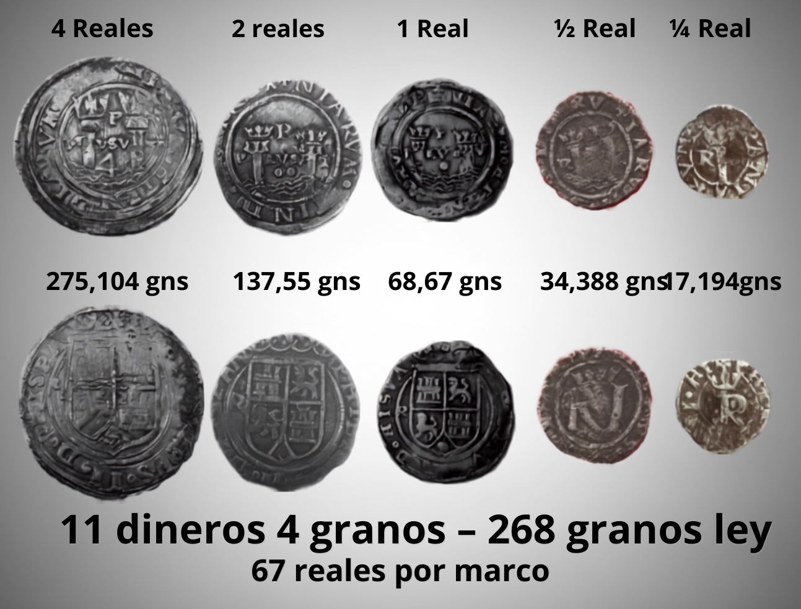
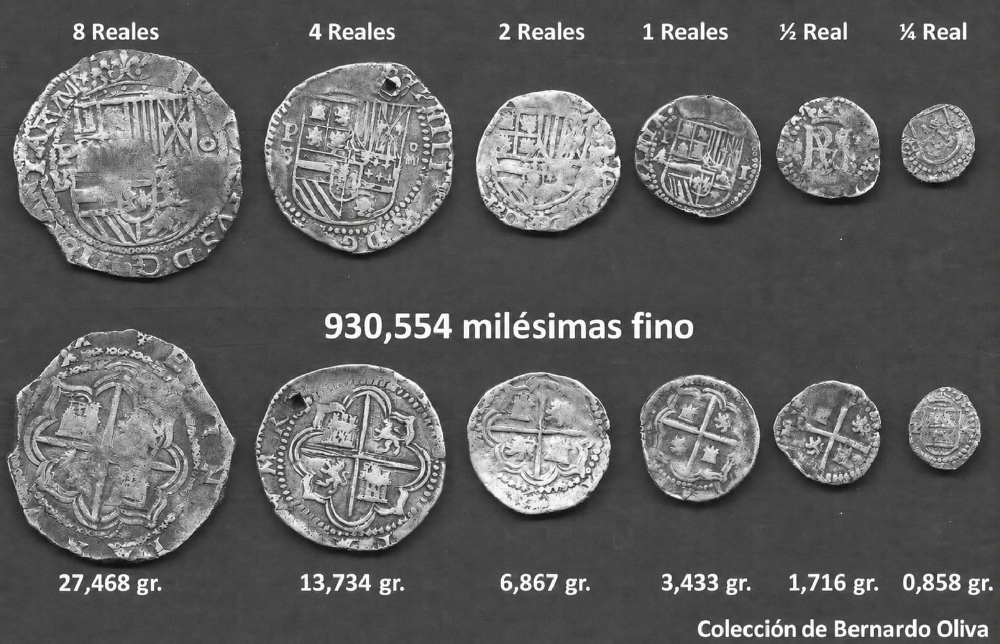
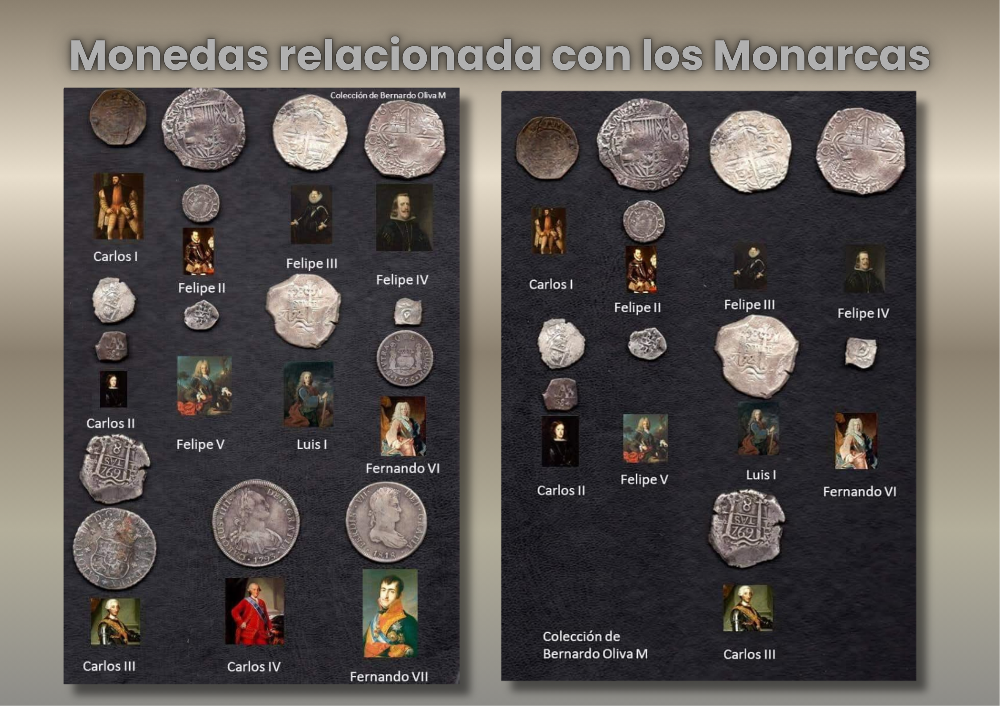
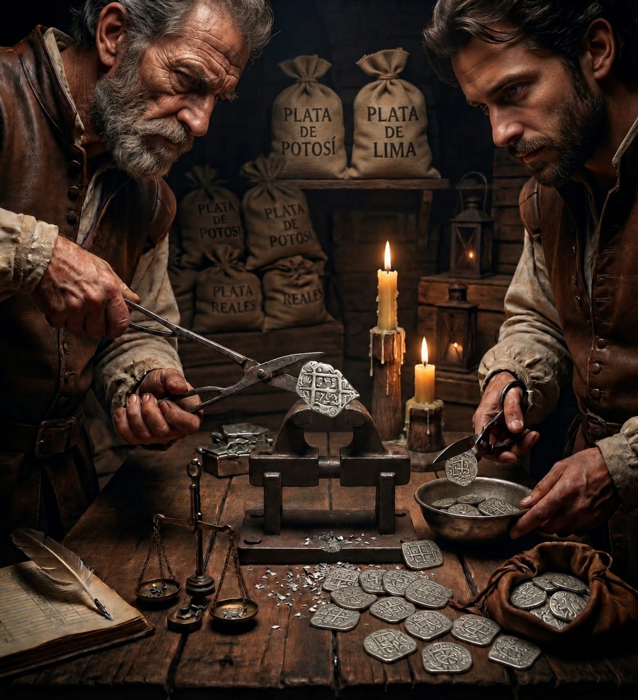
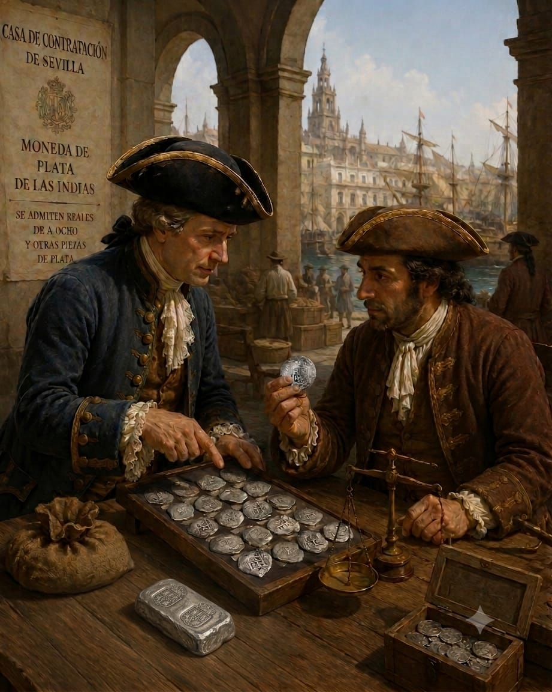
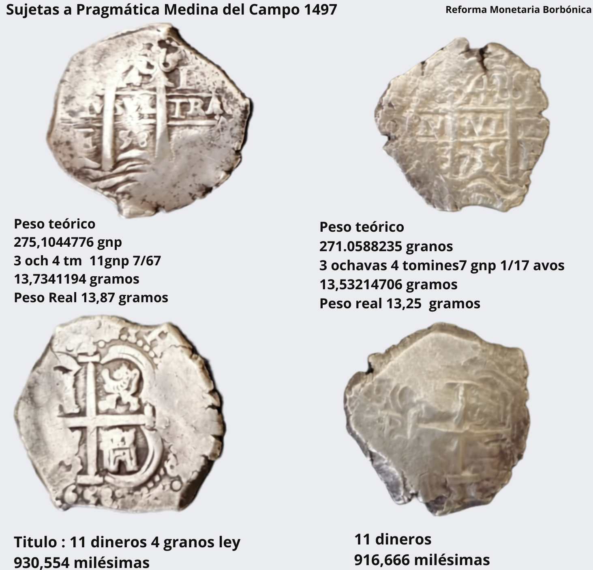
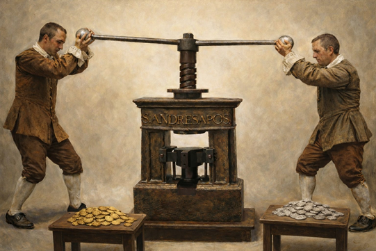
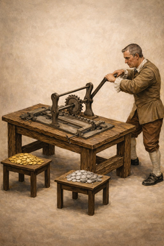
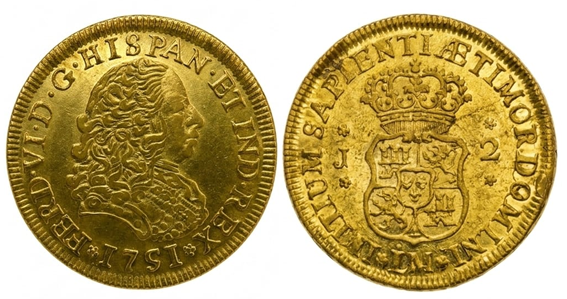
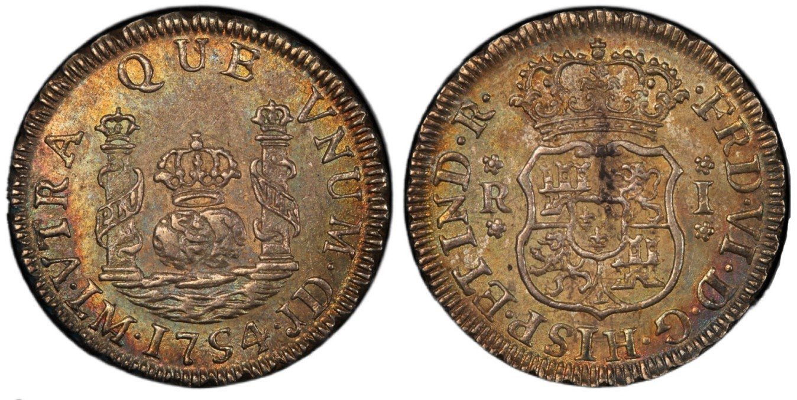

"Metrologia de las monedas macuquinas, según la pragmática de la nueva estampa"
Las ordenanzas promulgadas en Medina del Campo en 1497 por los Reyes Católicos establecieron que la ley de la moneda de plata debía ser de 11 dineros y 4 granos, equivalente a una fineza de 930,554 milésimas. Asimismo, fijaron una talla de 67 reales por marco castellano, lo que significa que de un marco de 230,0465 g debían acuñarse 67 monedas de un real, correspondiendo a cada una un peso teórico de 3,4335 g. En consecuencia, la moneda de 8 reales debía alcanzar un peso de 27,468g, conforme a los parámetros metrológicos establecidos por dicha normativa.

"Equivalencia de los pesos monetarios coloniales en el sistema métrico actual"

"Monedas relacionadas con los monarcas de la epoca"

"Nuevo Régimen Monetario establecido en las Reforma Monetaria de Felipe V"
Las ordenanzas que dispusieron el cese definitivo de la acuñación de monedas a martillo se enmarcaron dentro del amplio proceso de reformas monetarias impulsadas por el monarca Felipe V, señalando los inconvenientes atribuidos a este tipo de numerario, cuyas imperfecciones de manufactura y vulnerabilidades inherentes comprometían la uniformidad, seguridad y confiabilidad de la moneda circulante. La magnitud de estos problemas se veía acrecentada por la extensa circulación de estas piezas tanto en los territorios de la Monarquía Hispánica como en los circuitos comerciales de alcance global.
En este contexto, las ordenanzas promulgadas el 9 de junio de 1728 bajo el título “Ley, peso y estampa y otras circunstancias con que se ha de labrar las monedas de oro y plata en los Reynos de España y de las Indias” constituyen una fuente de especial relevancia para comprender las motivaciones que sustentaron la reforma monetaria. Sus disposiciones permiten advertir las principales deficiencias que las autoridades reales atribuían al sistema tradicional de acuñación, resultando particularmente significativo que el texto normativo inicie su exposición destacando las irregularidades observadas en la producción monetaria de las distintas casas de moneda.
Este pasaje revela que la Corona había sido informada de reiteradas deficiencias en los procesos de acuñación, las cuales eran atribuidas por ministros y operarios a contingencias propias de las labores de fabricación. Sin embargo, la incorporación de esta observación en los párrafos iniciales de la disposición evidencia que dichas irregularidades eran consideradas por las autoridades como un problema estructural de considerable importancia. En consecuencia, tales deficiencias fueron interpretadas como una manifestación de las limitaciones inherentes al sistema de acuñación a martillo, constituyendo uno de los principales argumentos que justificaron la adopción de reformas orientadas a incrementar el control técnico de la producción monetaria y a asegurar una mayor uniformidad en la moneda emitida en los dominios hispánicos . A partir de este diagnóstico, la normativa identificó diversas causas que explicaban los inconvenientes asociados a esta técnica de fabricación monetaria, al tiempo que estableció una serie de medidas correctivas destinadas a subsanar tales deficiencias. Entre ellas, pueden distinguirse tres problemáticas fundamentales, así como las soluciones propuestas por la Corona para su resolución.
Prácticas abusivas y negligencias administrativas en la ceca
En el siglo XVII de dichas ordenanzas se señalaba que las talegas, es decir, los saquitos destinados al transporte de mil pesos en monedas de distintas denominaciones —aunque integrados mayoritariamente por piezas de ocho reales— debían alcanzar, según lo dispuesto por la normativa, un peso de 119 marcos, 3 onzas, 1 ochava y 4 tomines. No obstante, se advertía que dichas cantidades se encontraban por debajo del peso reglamentario, resultando, por tanto, febles: “[…] labrándose en la de México de la ley de diez dineros y veintidós granos o poco más, y que en el peso ha correspondido la talega de mil pesos a 117 marcos y dos onzas a poco más, debiendo pesar cada mil pesos ajustados al dineral de 67 reales de plata por marco 119 marcos y tres onzas largas y que la moneda que se ha labrado en la Casa de Potosí ha tenido la ley de once dineros o poco más, que las talegas de mil pesos suelen pesar 116 marcos, 113 y 114 y algunas veces menos, y que en las moneda menuda de a dos reales de plata, de reales sencillos y de medios reales es grande el abuso, no teniendo justo motivo para ello y conviniendo corregir éstos descuidos y excesos […]”.
Una vez recibida esta ordenanza por el virrey del Perú, se dispuso la fiscalización de las monedas emitidas en la Casa de Moneda de Lima mediante la verificación del peso de diversas denominaciones. Para ello, fueron examinados varios marcos de moneda, según consta en la documentación de la época: “[…] cinco efpecies de Moneda de la partida que eftaba para librafe, y pufieron 50 marcos de pefos grueffos, y 25 de cada una de las demás monedas […] ”. Los resultados obtenidos permitieron constatar la existencia de numerario feble, corroborando las preocupaciones expresadas por las autoridades metropolitanas. A modo de ejemplo, los cincuenta marcos de monedas de ocho reales produjeron un total de 423 pesos, cuando, conforme al peso legal establecido, debieron equivaler aproximadamente a 418 pesos. Del mismo modo, las monedas de un real, reducidas a su equivalencia en pesos de ocho reales, totalizaron 215 pesos, pese a que, de acuerdo con los parámetros reglamentarios, debieron representar cerca de 209 pesos.
"Vulnerabilidad de la moneda macuquina al cercén y a la falsificación"

Otro de los problemas asociados a este tipo de acuñaciones era su notable vulnerabilidad al cercén, práctica mediante la cual se recortaban pequeñas porciones de metal de los cantos de las monedas con el propósito de obtener un beneficio ilícito en plata. Esta situación fue señalada por el ensayador Cristóbal Cano Melgarejo, quien, tras la fiscalización de las monedas producidas en la Casa de Moneda de Lima y la comprobación de que una parte de ellas se encontraba feble, fue condenado, junto con otros funcionarios de la ceca, a pena de prisión. No obstante, debido a la necesidad de mantener la continuidad de la producción monetaria, el ensayador cumplió su condena dentro de las propias instalaciones de la Casa de Moneda.
Entre los argumentos esgrimidos en su defensa figuraba precisamente la frecuente extracción de las piezas de mejor peso y ley por parte de particulares y comerciantes, quienes retenían las monedas más ajustadas y dejaban en circulación aquellas de menor calidad. En este sentido, señalaba que “[…] porque corrientemente avia noticia de aver muchas perfonas que cercenan la Monedas, y también las entrefacan, pesandolas, para valerfe de aquellas que eftan mas grueffas, y puntuales al pefo, y es en tanto grado efte exceffo, que ha llegado efte confeffante a ver muchas Monedas dobles, no solo cercenadas por el canto, fino fachada una foleadura por encima de las mifmas armas […]”
Sin embargo, esta problemática no constituía una novedad para las autoridades de la Monarquía. De hecho, las propias ordenanzas reconocían explícitamente las debilidades inherentes a la moneda macuquina, al señalar que “[…], y que por no tener buena estampa, ni ser de figura redonda con un cordoncillo al canto las que se labran en Indias, están muy sujetas al cercén y a la falsificación.” Esta observación resulta particularmente relevante, pues evidencia que las deficiencias físicas y técnicas de estas acuñaciones eran ampliamente conocidas por las autoridades metropolitanas, las cuales identificaban en la irregularidad de su forma y en la ausencia de elementos de seguridad en el canto factores que facilitaban tanto el cercén como las falsificaciones.
La emigración de moneda macuquina hacia los territorios fronterizos de la Monarquía Hispánica

Debido a su elevado contenido de plata, equivalente a una ley de once dineros y cuatro granos de pureza (930,555 milésimas de fino), así como a su adecuado peso, la moneda acuñada en los dominios hispánicos gozaba de una notable aceptación en los mercados internacionales. Esta circunstancia provocó que el numerario fuese ampliamente demandado por comerciantes extranjeros, favoreciendo su extracción de los territorios de la Monarquía y dificultando su posterior retorno a la circulación local, así también lo señalo el ensayador Cano Melgarejo “[…] fuera de que en aquel Reyno ha avido fiempre quienes fe aplican a entrefacar, y apartar Monedas, quedandofe con las fuertes, y ajuftadas, y expendiendo las menos ajustadas, y febles: y con mas frecuencia fe repitió efto en el tiempo que duró el Comercio con los Francefes, los quales procediendo con aquel eftudio, fepararon, y llevaron de efte Reyno muchos millones de Monedas ajuftadas, y fuertes: y es muy factible, que fe continúe lo mifmo con las que fe conducen por tierra firme á efte Reyno, dexando folo aquellas de menos ajufte, y pefo […]”.
La preocupación de las autoridades por este fenómeno queda reflejada en las disposiciones reformistas de la época, las cuales reconocían que la alta ley de la moneda española constituía un incentivo para su exportación hacia otros Estados. En este sentido, se señalaba que “[…] para cuya reducción concurren también las consideraciones de que, no siendo de mejor ley que las de otros Estados, con quienes más comercian mis vasallos, serán menos apetecidas y buscadas para extraerlas, y que hallándose ya el oro en la ley de 22 quilates y poniéndose la plata en la de once dineros […]”.
Las soluciones propuestas para las deficiencias de la moneda macuquina
La ordenanza hacía referencia expresa a los diversos problemas asociados a este tipo de amonedación, razón por la cual sus distintos capítulos establecían una serie de medidas destinadas a corregir tales deficiencias. En particular, respecto de los problemas derivada a la problemática de la emigración de las monedas hacia mercados extranjeros, la ordenanza dispuso una serie de medidas orientadas a disminuir el atractivo que el numerario hispánico ejercía fuera de los dominios de la Monarquía. Para ello, se establecieron modificaciones tanto en la ley como en el peso de las monedas. Respecto de la reducción del título de fineza, el capítulo primero ordenaba que: “Primeramente, es mi voluntad que toda la moneda de plata, que en adelante se labrare en mis Casas de Moneda de estos Reinos y de los de Indias, ya sea por cuenta de mi Real Hacienda o por la de particulares, tenga la ley de once dineros justos […]”. Esta disposición implicaba una disminución de la pureza de la plata, quedando establecida en términos modernos en 916,666 milésimas de fino.
Por otra parte, la reducción del peso de las monedas se llevó a cabo mediante el aumento del número de piezas que debían acuñarse por cada marco de plata. En este sentido, el capítulo tercero disponía que: “Por lo que toca al peso o talla que han de tener las expresadas monedas, ya sean piezas gruesas o menudas, considerando que la labor y forma con que se han de ejecutar en adelante, según esta mi Ordenanza, será más prolija, costosa y detenida, mando que en lugar de los 67 reales de plata que antes de ahora salían de cada marco, se saquen en adelante 68 […]”.
Ambas medidas respondían a una misma finalidad económica y monetaria orientada a reducir el valor intrínseco de las monedas de plata para aproximarlo al de las acuñaciones de otros Estados europeos. Con ello se pretendía disminuir los incentivos para su extracción, fundición y exportación del numerario hispánico, limitando la constante salida de numerario de alta calidad que afectaba a los territorios de la Monarquía y favoreciendo, al mismo tiempo, una mayor permanencia de la moneda en los circuitos comerciales internos. En aplicación de estas disposiciones, la Real Casa de Moneda de Lima efectuó la primera acuñación de plata conforme al nuevo régimen metrológico el 8 de agosto de 1729, para lo cual se amonedaron 4.089 marcos y 6 onzas de plata, quedando además 537 marcos en cizalla, según consta en los registros de la ceca .
En lo relativo a los problemas asociados al cercén de las monedas, a la circulación de numerario feble y a la deficiente calidad de la impronta que caracterizaba a las acuñaciones macuquinas, el capítulo segundo dispuso la sustitución de los métodos tradicionales de fabricación por procedimientos mecánicos que permitieran obtener piezas uniformes, circulares y dotadas de una calidad técnica superior como elementos de seguridad en el los bordes de la moneda, por ello se ordenó que las monedas fueran provistas de cordoncillo o laurel en el canto con el propósito de dificultar las prácticas de cercén y falsificación y reforzar la autenticidad e integridad física del numerario.
La disposición señalaba expresamente que: “Todas las monedas de plata que se labraren en las Casas de estos mis Reinos y de los de Indias serán acuñadas en ingenios o molinos de agua o de sangre y de figura circular con cordoncillo o laurel al canto, para dificultar por este medio el cercen, y la falsificación. Y para que no haya variación alguna en estas, ni en las demás circunstancias de las monedas de plata, que se labraren en las Casas de estos, y de aquellos Reinos, se remitirán a todas ellas matrices de la punzonería de armas, orlas, letras y grafilas, que se ejecutarán por el Tallador de la Casa de la Corte o el que con más primor lo ejecutare, para que precisa e inviolablemente sigan los demás Talladores de todas las Casas una misma regla en el repartimiento de toda la punzonería e inscripciones, para cuya uniforme imitación se les remitirán también monedas ejecutadas […]”.
No obstante, la implantación de este nuevo sistema de acuñación no se produjo de manera inmediata en todas las casas de moneda. La propia disposición reconocía las dificultades materiales derivadas de la instalación de los molinos, volantes y demás instrumentos necesarios para la fabricación mecanizada del numerario. Por ello, mientras se completaba la implementación de estas innovaciones técnicas, se ordenó a las autoridades virreinales velar por el estricto cumplimiento de aquellas disposiciones que resultaran practicables, especialmente las relativas a la ley y al peso de las monedas. Asimismo, se dispuso que las piezas que continuaran acuñándose a martillo debían presentar con claridad los elementos identificativos fundamentales, tales como la fecha de emisión, la marca de la ceca y la señal del ensayador. En este sentido, el capítulo XII establecía que: “ […] y en caso que en aquellas Casas de Moneda no se pudieren disponer prontamente los molinos, volantes y lo demás que conviene para labrar moneda de figura redonda y con las demás circunstancias, conforme a las muestras y a esta Instrucción y se necesitare enviar algunos artífices, instrumentos u otras cosas de España, me lo representarán para que Yo mande dar las providencias convenientes; pero sin que en este intermedio se deje de observar lo contenido en ella en todas las demás partes que fueren practicables, y especialmente en lo que mira a la ley y peso, lo que se ha de observar inviolablemente en todas las Casas y en cualesquiera especies de monedas que se labraren por cuenta de mi Real Hacienda o por la de particulares, teniendo también especial cuidado en que las monedas de oro o de plata que en adelante se labraren de martillo, hasta que se pongan corrientes los molinos y volantes, estén bien acuñadas, de forma que se vean en ellas con claridad el año en que se hubieren labrado, la letra o armas de la Casa y la señal del Ensayador que haya despachado y dado por de ley el oro o plata de que fueren fabricadas.

“La incorporación de la Casa de Moneda de Lima al control directo de la Corona ”
En continuidad con las ordenanzas monetarias de 1728, la Corona promulgó en Cazalla, el 16 de julio de 1730, un nuevo cuerpo normativo destinado a reorganizar las casas de moneda de la Monarquía, incorporándolas progresivamente a la administración directa de la Real Hacienda y suprimiendo el sistema de gestión particular.
La introducción de la acuñación mecanizada en las Indias comenzó en la Real Casa de Moneda de México. No obstante, la enfermedad de su superintendente motivó que, mediante Real Cédula de 23 de septiembre de 1746, se designara a Andrés Morales y de los Ríos como superintendente de la Casa de Moneda de Lima, ordenándose previamente su traslado a México para instruirse en las técnicas de acuñación mecanizada, las ordenanzas vigentes y la organización del envío de maquinaria, herramientas y personal especializado destinados a la futura ceca limeña (Lazo García, Carlos “Economía Colonial y Régimen Monetario Perú: Siglos XVI-XIX” Lima 1992,Tomo II, Pág. 234).
Con amplias facultades conferidas por la Corona, Morales y de los Ríos asumió el proceso de implantación de la nueva ceca mecanizada. Su toma de posesión, el 27 de mayo de 1748, contó con el respaldo del virrey José Antonio Manso de Velasco y de las principales autoridades del reino, aunque debió enfrentar la oposición de la familia Santa Cruz, titular hereditaria del oficio de tesorero, cuyos reclamos culminaron con la restitución parcial de dicho cargo en 1754. (Dargent, Eduardo “La Moneda en el Perú: 450 años de historia” Lima 2019, Pág. 158)
Como parte de este proceso, el 6 de junio de 1748 se promulgó en Lima una ordenanza que obligaba a los poseedores de oro y plata en pasta a entregarlos a la Casa de Moneda para su acuñación, garantizando el pago de su valor legítimo y prohibiendo recargos o beneficios adicionales a intermediarios. La medida, ejecutada bajo la dirección de Morales y de los Ríos, reforzó el control de la Corona sobre la producción monetaria y la circulación de metales preciosos, en concordancia con los principios establecidos por las ordenanzas de Cazalla de 1730, según los cuales toda la labor de acuñación debía realizarse exclusivamente en beneficio de la Real Hacienda.
.jpeg)
“La mecanización de la Casa de Moneda de Lima ”
Desde el 12 de noviembre de 1746 se inició la adquisición de los terrenos destinados a la nueva Real Casa de Moneda de Lima. El proyecto, diseñado por el arquitecto Salvador de Villa, comprendía la compra de cinco solares y una residencia para el superintendente, con una inversión de 78.162 pesos. El conjunto alcanzó una superficie aproximada de 10.857 varas cuadradas (9.120 m²), sobre la cual se colocó la primera piedra el 2 de noviembre de 1748, integrándose al programa borbónico de modernización de la administración y de la producción monetaria.
La reconstrucción de la ceca, destruida por el terremoto de 1746, estuvo inicialmente bajo la dirección del maestro alarife Cristóbal de Vargas, designado por una comisión de altas autoridades virreinales. Posteriormente, con la llegada del superintendente Andrés Morales y de los Ríos, Vargas pasó a colaborar con Salvador de Villa en la ejecución de la nueva planta arquitectónica. La documentación conservada reconoce oficialmente sus servicios y registra las reclamaciones por el pago de salarios atrasados, así como litigios relativos a la propiedad de materiales recuperados del antiguo edificio ( “Razón de las cédulas y ordenes dirigidas a la Real casa de moneda de Lima que se hayan en su contaduría” Documento N 1 -folio 105).
La obra proyectada por Salvador de Villa constituyó una de las intervenciones de ingeniería más importantes del período, pues requirió modificar el cauce del río Huatica, derivado del Rímac, para aprovechar su fuerza hidráulica en el accionamiento de los molinos de laminación, incorporando una solución tecnológica de carácter industrial al proceso de acuñación.
La construcción se prolongó durante varios años. Documentos de 1756 evidencian que aún se contrataban puertas y ventanas para las dependencias de la ceca, mientras que el virrey José Antonio Manso de Velasco informaba en 1761 que el edificio se hallaba prácticamente concluido, restando únicamente las viviendas del contador y del tesorero, cuya finalización esperaba para el año siguiente.


“Las primeras acuñaciones mecanizadas en la Casa de Moneda de Lima ”
La introducción de la acuñación mecanizada fue posible gracias a las matrices y punzones elaborados en México por el tallador Joseph de Zúñiga, quien acompañó a Andrés Morales y de los Ríos a Lima. Con estos instrumentos se iniciaron las primeras pruebas y, el 25 de mayo de 1751, Morales remitió a España las primeras monedas de oro acuñadas mediante el sistema de volante.
Ese mismo año arribaron al Callao las matrices y punzones enviados desde Madrid; sin embargo, la humedad deterioró los destinados a la acuñación de oro, obligando a emplear los juegos traídos desde México. Esta circunstancia permitió mantener la continuidad del proceso de mecanización.
Hacia finales de 1751 se encontraban en funcionamiento un molino y tres volantes, con los cuales comenzaron a acuñarse las primeras monedas mecanizadas de cordoncillo, inicialmente de oro y posteriormente de oro. Durante los dos años siguientes la capacidad productiva de la ceca se amplió con la incorporación de tres molinos y seis volantes adicionales, consolidándose definitivamente la transición desde la acuñación a martillo hacia la producción mecanizada.
Moneda de dos escudos de oro
Imagen de Moneda Gentileza Víctor Urbano

“El Memorial Ajustado elaborado en cumplimiento del decreto de la Junta General de Comercio y Moneda de estos Reinos, con la comparecencia de las partes interesadas y de sus respectivos abogados, etc…”, constituye una fuente documental de especial relevancia para comprender las disposiciones oficiales que regularon el diseño iconográfico de la nueva moneda mecanizada o de cordoncillo. En dicho documento se menciona con precisión los elementos heráldicos y las leyendas que debían incorporarse en las emisiones monetarias destinadas a los dominios americanos, reflejando el programa político y simbólico impulsado por la Monarquía borbónica para uniformar la producción monetaria y reforzar la autoridad de la Corona mediante una iconografía común. El documento dispone expresamente lo siguiente:
“[…] y que la plata nueva mandada labrar en Indias, y la que se labrase en estos Reynos, con el cuño de las Reales Armas de Castillos y Leones, y en medio el Escudo pequeño de las Flores de Lis, y una Granada al pie, con su inscripción: PHILIPPUS V. D. G. HISPAN. ET INDIARUM REX. Y por el reverso las dos Columnas coronadas con el PLUS ULTRA, bañándolas con unas ondas de mar, y entre ellas dos Mundos unidos con una Corona que los ciñe, y por inscripción UTRAQUE UNUM […]”.
Imagen de Moneda Gentileza Víctor Urbano

.png)
.jpeg)
.jpeg)
.jpeg)
.jpg)
.png)
.jpg)
.jpg)
.jpg)
.jpg)
.jpg)
.jpg)
.jpg)
.jpg)
.jpg)
.jpg)
.jpeg)
.png)
.jpg)
.jpg)
.jpg)
.jpg)
.jpg)
.jpg)
.jpg)
.jpg)
.jpg)